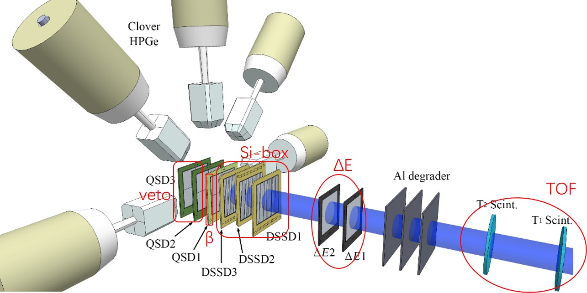

实验¶
关于 PKU 固件从前面板网口 RJ45 输出多重性选择的结果
当设置 multiplicity==0, 输出高电平
当设置 multiplicity>=1, 默认输出低电平，只有满足多重性条件时才有高电平。
MSRB bit6为1时
才能有同步指示信号
才能 DPM 的输出信息
才有FT，VT信息
在线监视¶
在修改参数文件 settings.ini 之后，你需要运行以下程序来修改寄存器的设置。
./progfippi
需要注意的是，运行 DAQ 时不允许执行该程序
您可以在网页中查看参数设置，以及计数器等情况。
实验模式¶
我们将为以下四种类型的实验提供固件和软件的通用组合。
在束 gamma 谱学¶
设计中…
beta 衰变¶
以下列出探测阵列中的硅探测器信息：
- QSDΔE1
MICRON MSQ25, Junction 4, 50.0mm x 50.0mm, 309um
- QSDΔE2
CIAE Q300, Junction 4, 50.0mm x 50.0mm, 300um
- DSSD1
MICRON W1, Junction 16, Ohmic 16, 49.5mm x 49.5mm, 142um
- DSSD2
MICRON W1, Junction 16, Ohmic 16, 49.5mm x 49.5mm, 142um
- DSSD3
MICRON W1, Junction 16, Ohmic 16, 49.5mm x 49.5mm, 142um
- QSD1
MICRON MSQ25, Junction 4, 50.0mm x 50.0mm, 1546um
- QSD2
CIAE Q300, Junction 4, 50.0mm x 50.0mm, 300um
- QSD3
CIAE Q300, Junction 4, 50.0mm x 50.0mm, 300um
塑料闪烁体 T1，T2 信号经过 TAC 将时间差转为脉冲幅度信息，则可以使用 100MSPS 模块进行采集。
设计中…
核反应¶
设计中…
超重核¶
设计中…